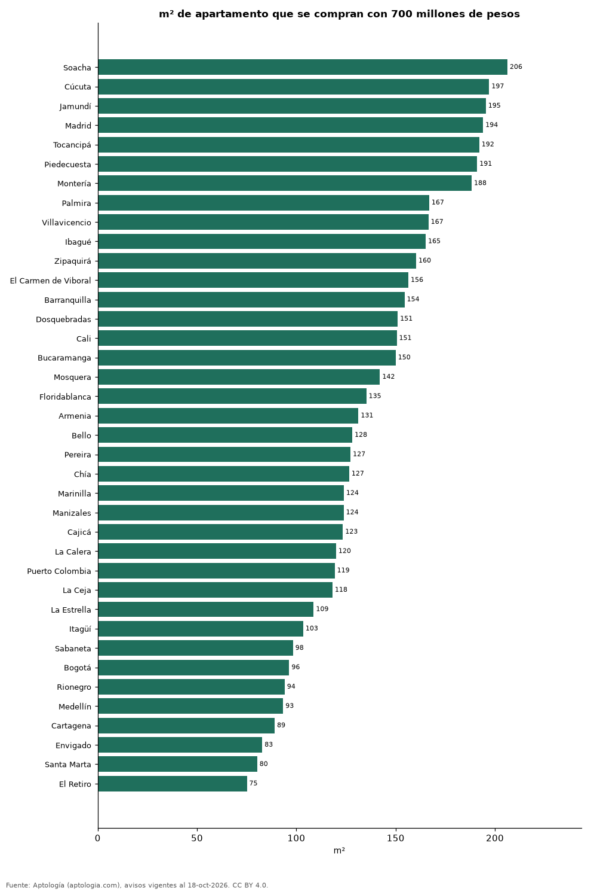

¿Cuántos metros cuadrados se compran con 700 millones de pesos? 38 ciudades de Colombia (octubre 2026)
Estudio con datos abiertos (CC BY 4.0). Versión original: https://www.aptologia.com/estudios/cuantos-metros-cuadrados-compra-700-millones-ciudades-colombia-2026 · DOI: 10.5281/zenodo.23523341
Con 700 millones de pesos se compran unos 206 m² de apartamento en Soacha, la ciudad que más rinde de 38, y 75 m² en El Retiro. En Bogotá alcanzan para 96 m² y en Medellín para 93 m².
Resumen: usamos el precio mediano por m² de 120.331 apartamentos en venta con área declarada en 38 ciudades.
Actualizado: 18 de octubre de 2026 (datos del 18 de octubre de 2026) · Próxima actualización: mensual.

Resumen
| Indicador | Valor |
|---|---|
| Más m² | Soacha: 206 m² |
| Menos m² | El Retiro: 75 m² |
| Bogotá | 96 m² |
| Medellín | 93 m² |
Metros cuadrados por 700 millones de pesos
| Ciudad | m² con 700 millones de pesos | Precio por m² (mediana) | Avisos con área |
|---|---|---|---|
| Soacha | 206 | 3,39 millones de pesos | 566 |
| Cúcuta | 197 | 3,55 millones de pesos | 561 |
| Jamundí | 195 | 3,58 millones de pesos | 466 |
| Madrid | 194 | 3,61 millones de pesos | 475 |
| Tocancipá | 192 | 3,64 millones de pesos | 264 |
| Piedecuesta | 191 | 3,66 millones de pesos | 246 |
| Montería | 188 | 3,72 millones de pesos | 288 |
| Palmira | 167 | 4,19 millones de pesos | 112 |
| Villavicencio | 167 | 4,20 millones de pesos | 347 |
| Ibagué | 165 | 4,24 millones de pesos | 1.217 |
| Zipaquirá | 160 | 4,37 millones de pesos | 819 |
| El Carmen de Viboral | 156 | 4,48 millones de pesos | 90 |
| Barranquilla | 154 | 4,53 millones de pesos | 7.532 |
| Dosquebradas | 151 | 4,63 millones de pesos | 607 |
| Cali | 151 | 4,65 millones de pesos | 9.365 |
| Bucaramanga | 150 | 4,67 millones de pesos | 2.439 |
| Mosquera | 142 | 4,93 millones de pesos | 817 |
| Floridablanca | 135 | 5,18 millones de pesos | 919 |
| Armenia | 131 | 5,33 millones de pesos | 2.278 |
| Bello | 128 | 5,46 millones de pesos | 2.319 |
| Pereira | 127 | 5,50 millones de pesos | 4.376 |
| Chía | 127 | 5,53 millones de pesos | 1.507 |
| Marinilla | 124 | 5,65 millones de pesos | 164 |
| Manizales | 124 | 5,65 millones de pesos | 2.788 |
| Cajicá | 123 | 5,67 millones de pesos | 1.517 |
| La Calera | 120 | 5,83 millones de pesos | 139 |
| Puerto Colombia | 119 | 5,87 millones de pesos | 144 |
| La Ceja | 118 | 5,92 millones de pesos | 312 |
| La Estrella | 109 | 6,44 millones de pesos | 561 |
| Itagüí | 103 | 6,77 millones de pesos | 2.012 |
| Sabaneta | 98 | 7,12 millones de pesos | 4.375 |
| Bogotá | 96 | 7,26 millones de pesos | 31.265 |
| Rionegro | 94 | 7,44 millones de pesos | 3.023 |
| Medellín | 93 | 7,50 millones de pesos | 20.515 |
| Cartagena | 89 | 7,86 millones de pesos | 5.774 |
| Envigado | 83 | 8,45 millones de pesos | 5.735 |
| Santa Marta | 80 | 8,72 millones de pesos | 3.779 |
| El Retiro | 75 | 9,32 millones de pesos | 618 |
700 millones de pesos ÷ precio mediano por m²; es un tamaño de referencia, no un aviso concreto, antes de gastos notariales e impuestos.
Preguntas frecuentes
¿Cuántos metros cuadrados compro con 700 millones de pesos en Bogotá? Unos 96 m² al precio mediano por m² de octubre de 2026.
¿Dónde rinde más un presupuesto de 700 millones de pesos? En Soacha: unos 206 m².
Metodología
- Fuente: exportes nocturnos de la base de datos de Aptología (aptologia.com) del 18 de octubre de 2026: avisos vigentes de vivienda en portales inmobiliarios de 13 países, recogidos por Aptología y vistos en línea entre el 11 y el 18 de octubre de 2026. Corte: 18 de octubre de 2026.
- Depuración: se eliminan duplicados exactos (misma ciudad, zona, tipo, precio, moneda, área, habitaciones y baños) y los precios fuera del percentil 1–99 de cada país, operación, moneda y tipo; el precio por m² usa solo avisos con área declarada entre 12 y 2.000 m² y también se recorta al P1–P99.
- Qué se mide: precios pedidos (publicados), no precios de cierre. En arriendo, el canon mensual sin administración, gastos comunes ni condominio.
- Muestra mínima: cada cifra publicada se apoya en al menos 30 avisos; las celdas con menos se omiten.
- Colombia: Precios en pesos colombianos, sin conversión de moneda.
- Limitaciones: la cobertura depende de los portales que recorre Aptología en cada país y es mayor en las ciudades grandes y en los segmentos medio-alto y alto; el área es la que declara el aviso, sin verificar; los nombres de zona vienen de los portales.
- Privacidad: solo se publican agregados; no se publica ningún dato personal, enlace a avisos ni nombre de anunciante.
- Datos abiertos: datos.csv, licencia CC BY 4.0.
Cómo citar
Pinzón Pineda, D. M. (2026). ¿Cuántos metros cuadrados se compran con 700 millones de pesos? 38 ciudades de Colombia (octubre 2026). Aptología (aptologia.com). https://github.com/elbroker/aptologia-datos/tree/main/estudios/cuantos-metros-cuadrados-compra-700-millones-ciudades-colombia-2026. Datos: datos.csv, licencia CC BY 4.0.